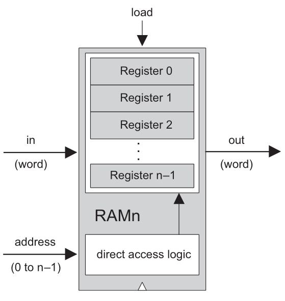
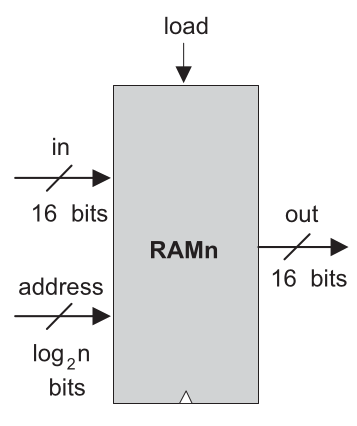
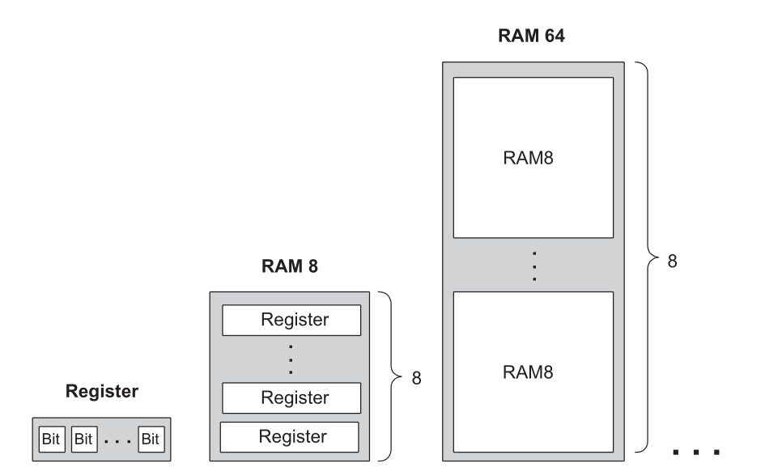

Random Access Memory
Selecting one word among many.
From One Register to Many
Stores one 16-bit word.
An array of fixed-width Registers.
Width is bits per word. Size is number of words.
What Does Random Access Mean?
Random access means any word can be accessed directly, in the same way, regardless of which word was accessed previously.

The memory does not choose a location randomly.
The address selects the word we want to read or write.
Addresses
Each word is selected by a binary address. If a memory has 2^k words, it needs k address bits.
8 words = 2^3 words, so the address has 3 bits.
101 selects word number 5.
Addresses are implemented by selection logic. They are not labels physically written on the registers.
Address Capacity
Find the number of address bits required for each memory.
| Memory | Number of words | Address bits |
|---|---|---|
| RAM8 | 8 | 3 |
| RAM64 | 64 | 6 |
| RAM512 | 512 | 9 |
| RAM4K | 4096 | 12 |
| RAM16K | 16384 | 14 |
A 10-bit address can select 2^10 = 1024 locations.
The RAM Contract
- Chip name:
- RAMn
- Inputs:
in[16], address[k], load- Outputs:
out[16]- Read:
out(t)=RAM[address(t)](t)- Write:
- If
load(t-1), thenRAM[address(t-1)](t)=in(t-1).
| Chip | words | address bits |
|---|---|---|
| RAM8 | 8 | 3 |
| RAM64 | 64 | 6 |
| RAM512 | 512 | 9 |
| RAM4K | 4096 | 12 |
| RAM16K | 16384 | 14 |

Read Now, Write Next Cycle
Changing address selects the current word immediately.
If load=1, the selected Register commits to in at the next cycle boundary.
This asymmetry is the main timing idea for RAM.
Trace Reads and Writes
Initial memory: address 00=7, 01=2, 10=9, 11=4. Fill out during cycle and update memory after each cycle.
| cycle | address | in | load | out during cycle |
|---|---|---|---|---|
| 1 | 01 | 8 | 0 | 2 |
| 2 | 10 | 5 | 1 | 9 |
| 3 | 10 | 0 | 0 | 5 |
| 4 | 00 | 3 | 1 | 7 |
After cycle 4, the changed words are address 10=5 and address 00=3.
Building RAM8
RAM8 contains eight 16-bit Registers plus direct-access logic.
How does load reach only the selected Register?
Use: DMux8Way.
How does only the selected Register reach out?
Use: Mux8Way16.
Complete the RAM8 Diagram
Add a DMux8Way to route load.
Add a Mux8Way16 to select the output.
Connect address[0..2] to both selection circuits.
Write the corresponding HDL connection plan.
PARTS:
DMux8Way(in=load, sel=address, a=l0, b=l1, ..., h=l7);
Register(in=in, load=l0, out=o0);
...
Register(in=in, load=l7, out=o7);
Mux8Way16(a=o0, b=o1, ..., h=o7, sel=address, out=out);Building RAM64 from RAM8
A six-bit RAM64 address can be read as abc def.
abcSelect one of eight RAM8 chips.
defSelect one Register inside the chosen RAM8.
Find the Physical Path
For each RAM64 address, identify the RAM8 bank and the Register inside that bank.
| RAM64 address | bank bits | offset bits | path |
|---|---|---|---|
000101 | 000 | 101 | bank 0, register 5 |
011110 | 011 | 110 | bank 3, register 6 |
111001 | 111 | 001 | bank 7, register 1 |
Recursive Memory Construction

- Register to RAM8
- Use eight Registers and direct-access logic.
- RAM8 to RAM64
- Use eight RAM8 chips and split the address into bank bits and offset bits.
- Larger RAM chips
- Repeat the same construction recursively.
Split the Address
How should the address bits be divided at each construction step?
| Build | address bits | select subchip | inside subchip |
|---|---|---|---|
| RAM512 from RAM64 | 9 | upper 3 | lower 6 |
| RAM4K from RAM512 | 12 | upper 3 | lower 9 |
| RAM16K from RAM4K | 14 | upper 2 | lower 12 |
Random Access Memory
store 16-bit words.
select which word is read or written.
read is immediate; write commits next cycle.
large RAM chips are built recursively from smaller RAM chips.
Lecture 10: Program Counter
A stateful chip that can hold, increment, load, or reset a number.